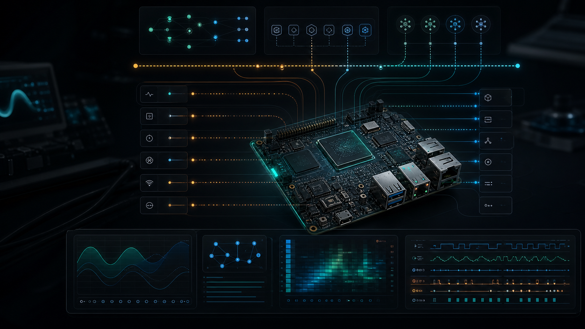

Modern C/C++, embedded Linux, BSP, device drivers, IPC/RPC, profiling, and protocol systems
Linux systems code that stays close to the hardware.
I bring 5+ years of experience building software where boot paths, drivers, kernel interfaces, multithreaded services, protocol streams, and profiling evidence have to work together under tight latency and reliability constraints.
C++17 request pipelines reduced data-processing latency by 35%

C++17
Kernel
BSP
gRPC
perf
Valgrind
Engineering posture
The interesting problems live where abstractions meet pins, packets, and threads.
I keep coming back to systems work because it rewards precision: a driver contract, a queue ownership rule, a cache-aware data path, a trace that explains why latency moved, and a build that can be recreated months later.
Good embedded engineering feels calm from the outside because the hard work is underneath: disciplined C/C++, small and testable interfaces, visible performance budgets, and debug paths that connect field symptoms to kernel, board, and user-space behavior.
Experience
Embedded Linux, modern C/C++, RPC layers, profiling, and reliable production services
- Re-engineered core backend modules in modern C++17 (smart pointers, move semantics, RAII) on Linux, reducing data-processing latency by 35% across high-throughput request pipelines.
- Designed multithreaded C++ services with lock-free queues and condition-variable synchronization, sustaining 10k+ concurrent requests while integrating cross-language IPC bridges to Python APIs.
- Built a publish/subscribe RPC layer using gRPC and Protobufs for inter-service messaging, cutting serialized payload size by 40% and round-trip latency by 25%.
- Instrumented memory and CPU profiling with Valgrind, perf, and AddressSanitizer to detect leaks and hotspots, eliminating 12+ defects and raising service uptime to 99.95%.
- Developed C++14 backend components on Linux, refactoring legacy modules into modern C++ constructs (smart pointers, move semantics) and cutting average request latency by 15% for high-traffic endpoints.
- Architected client-server and peer-to-peer communication using REST, WebSockets, JSON, and TLS over TCP/IP sockets, securely handling 500k+ daily transactions across distributed services.
- Engineered profiling and benchmarking utilities using gprof, perf, and custom telemetry hooks to detect performance bottlenecks, reducing p99 latency by 30% across critical request paths.
- Streamlined the C++ build process with CMake, Ninja, and clang-tidy across CI/CD pipelines, cutting compile times by 45% on a 200k-LOC codebase while enforcing unit-test and code-review gates.
- Programmed and maintained low-level C/C++ device drivers on embedded Linux, integrating industrial machines and sensors with central monitoring systems running 24/7 production workloads.
- Optimized real-time C++ services for manufacturing-line automation by tuning multi-threaded scheduling, cache-aware data structures, and Linux subsystems, reducing control-loop jitter by 40%.
- Architected publish/subscribe telemetry stack using RTP/RTSP/HLS and JSON over multicast/TCP sockets to stream sensor and video data from 50+ shop-floor embedded nodes to operator dashboards.
- Built C++ diagnostic tools leveraging Linux BSP and kernel performance counters for proactive fault detection, decreasing unplanned downtime by 28% across the embedded fleet.
System Diagram
Embedded Linux path from board support to observable user-space services
Start from the board
BSP layers, bootloader configuration, kernel options, and root filesystem choices shape the behavior that application code inherits.
Keep boundaries explicit
Device drivers, ioctl paths, shared memory, message queues, and sockets need ownership rules that make concurrency boring.
Measure before tuning
perf, ftrace, Valgrind, sanitizers, and custom telemetry make latency, leaks, jitter, and uptime a visible engineering loop.
Selected Work
Projects with source links, demos where available, and systems-level engineering signal
Linux Kernel
Character Device Driver
Linux character device driver with module lifecycle, ioctl interface, /proc debugging hooks, semaphores, and timers for concurrent access.
Operating Systems
Experimental Operating System
Toy OS built from scratch with scheduling, memory allocation, exception and disk-interrupt handlers, console I/O, processes, and semaphores.
Low-latency C++
CME MDP 3.0 Multicast Feed Handler
C++17 multicast UDP feed handler decoding binary messages, rebuilding order books, and handling replay-style recovery under latency pressure.
Kafka + Streaming
Real-time Stock Market Analysis Pipeline
Event-driven streaming pipeline that maps well to telemetry ingestion, high-throughput analytics, and operations dashboards.
Agentic AI + Markets
TradeSentinel
Full-stack AI trading insight system with real-time market context, tool-calling, and signal interpretation over live-like data.
RAG + Commerce
AskMyStore
Retrieval-based assistant using LangChain, OpenAI APIs, and vector search for grounded answers over catalog data.
AI Research
Comparative Study of Movie Recommendation Systems
IEEE-published recommendation systems work with source notebook and certificate, emphasizing model comparison and evaluation discipline.
Full-stack Product
STRANGERS
Application project focused on shipping a connected product experience across frontend, backend, and data flows.
LLM Search
LangChain Chat with Search
Agent-style search workflow demonstrating tool use, prompt orchestration, and grounded responses over external information.
Computer Architecture
16-Bit RISC Processor
Hardware lab work showing datapath/control design and architecture-level reasoning below application layers.
iOS App
Pitch Perfect
Mobile audio app demonstrating device APIs, UX flow, and a clean feature loop from capture to playback transformation.
Contact